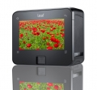

利图\
05年左右开始接触利图的数码后背，当时用的是1700W、2200W和后来试用了3300W。印象相当好。这个后背适合预算有限 初接触数码后背的玩家。商业应用也可，毕竟4000W像素后背放到灯箱那么大也已经够用了。
拍摄速度挺快的，火线的作用不解释，用过后背的都知道。这个背性价比是亮点。
耗电量注意下 外拍用手提电脑供电的话需要多备电池
影像非常的细腻，喜欢拍摄壮阔自然景观，又喜欢玩中画幅的真的值得一试，而且触控的显示屏十分清晰而且好用。
这颗CCD传感器，低噪点的优势非常明显，我看过其拍的照片就被吸引了。而且对于讨厌太多按键的我来说，多点触控的显示屏简直是福音，操控直观。
软件对电脑的配置要求挺高的啊...